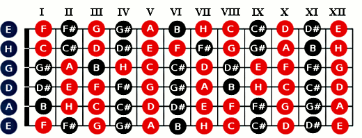

Są to najprostsze chwyty gitarowe, które powinien znać każdy szanujący się początkujący gitarzysta. Na początku naszej nauki akordowej będziesz musiał uzbroić w cierpliwość. Może potrwać nawet kilka tygodni zanim będziesz potrafił z poznanych akordów zagrać proste piosenki. Oczywiście wszystko zależy od twojego zaangażowania, ilości czasu jaki poświęcisz instrumentowi. Nie zniechęcaj się jeśli twoje opuszki zaczną wołać „to boli”, jest to całkiem naturalne zjawisko i z czasem na tyle stwardnieją, że będziesz mógł pozwolić sobie na wiele godzin treningu na gitarze.
Akord – ogólnie rzecz biorąc jest to klika dźwięków zagranych jednocześnie, a przełożeniu na gitarę będzie to szarpnięcie co najmniej trzech strun Akordy są wykorzystywane głównie przy akompaniamencie, czyli tworzą tło do głosu ludzkiego lub instrumentu solowego. Dzielimy je głównie na akordy durowe (wesołe) oraz molowe (smutne).
Chwyt gitarowy – pokazuje na jakich dokładnie progach przycisnąć struny aby zagrać określony akord.. Wiąże się to z tym, iż jeden akord można zazwyczaj złapać w paru miejscach na gryfie. Chwyty potocznie nazywa się funkcjami lub funtami.
Akordy durowe np. E-dur są często zapisywane bez końcówki „-dur”, tzn. występuje sama duża litera „E” natomiast akordy molowe np. e-moll zapisujemy jako małą literę „e” lub w publikacjach zagranicznych „Em”. Dla przykładu jeśli w danej piosence mamy podane chwyty E, a, D, to tak naprawdę są to akordy E-dur, a-moll, oraz D-dur.
Linie poziome to nic innego jak struny gitary, na górze znajduje się struna najcieńsza E1 i po kolei schodząc mamy struny H2, G3, D4, A5 oraz na samym dole basowa E1.
Linie pionowe odzwierciedlają nam progi, natomiast nad diagramem zawszę umieszczone są cyfry rzymskie ( np. I, II, III ) informują nas na których progach będziemy chwyt budowali.
Cyfra w czarnym kółku pokazuje nam, którym palcem lewej ręki (1-wskazujący, 2-środkowy, 3-serdeczny, 4-mały) przycisnąć strunę na określonym progu.
Zero po lewej stronie diagramu (O) oznacza, że tą strunę będziemy grali pustą czyli nigdzie nie przyciśniętą, natomiast „X” to struna, której dźwięk nie pasuję do akordu i musimy ją pominąć lub stłumić którymś z palców lewej ręki.
Kiedy opanowałeś podstawowe chwyty gitarowe takie jak E, e, A, a, D, d, C, G czas przejść do akordów nieco trudniejszych, mam tu na myśli akordy baree czyli tzw. chwyty barowe. O tyle jak w wyżej wymienionych akordach wykorzystywałeś puste struny, tak przy budowaniu chwytów barowych już musisz przycisnąć zazwyczaj pięć, sześć strun palcem wskazującym tworząc tak zwaną „poprzeczkę”. Nazwa chwyty barowe pochodzi od obcojęzycznego „baree”, które w dosłownym tłumaczeniu znaczy właśnie nic innego jak „poprzeczka”.
Nauka akordów baree jest dla wielu gitarzystów na pewno okresem bardzo nieprzyjemnym i uciążliwym, gdyż wymaga paru tygodni żmudnych ćwiczeń zanim je w pełni opanujesz. Niestety są niezbędne jeśli chcesz wygrywać wszystkie swoje ulubione kawałki, ale nie przejmuj się tym, gdyż nie taki diabeł straszny jak go malują.
Chwytów barowych jest bardzo wiele ale nie musisz się uczyć ich na pamięć, gdyż mają to do siebie, iż opierają się w głównej mierze na określonych schematach. Początkujący gitarzysta musi wiedzieć, że takich schematów jest 4. Budujemy je w oparciu o akordy podstawowe E-dur, e-moll, A-dur oraz a-moll.
Zanim omówię szczegółowo metodę dzięki, której nauczysz się budować owe akordy warto wiedzieć jaka jest kolejność poszczególnych dźwięków w muzyce (skala chromatyczna):
Aby utworzyć jakikolwiek chwyt barowy „typu E”, musimy zamienić na początek nieco opalcowanie chwytów podstawowych. Aby utworzyć chwyty barowe musisz przesunąć akord E-dur lub e -moll o określoną ilość progów i dołożyć palca wskazującego jako poprzeczkę, tzn. przycisnąć nim sześć strun. Nazwa akordu nowo powstałego bierze się od dźwięku podstawowego (pryma) na strunie E6 basowej, na której położyliśmy palca 1. Jeśli obok jakiegoś dźwięku znajduje się krzyżyk (#), w wymowie dodajemy do niego końcówkę „-is” np. G# = Gis. Jeśli bemol (b) to dodajemy końcówkę „-es” lub „-s” np. Gb = Ges.
Podobnie i tutaj aby utworzyć chwyty barowe musisz przesunąć akord A-dur lub a -moll o określoną ilość progów i dołożyć palca wskazującego na pięć strun jako poprzeczkę. Nazwa akordu nowo powstałego bierze się tym razem od dźwięku podstawowego (pryma) na strunie A6 basowej, na której położyliśmy palca 1. Struny E6 (basowej) nie gramy, tłumimy ją opuszkiem pierwszego palca podnosząc go lekko do góry nad strunę A5.